THROUGH
LITTLE EYES
Introduction
Welcome to Learning Through Little Eyes, my e-portfolio for my ECE classroom internship.
This journey taught me one important thing. In an early childhood classroom, the small moments are actually the big ones. A tiny hand reaching out, a quiet child finally joining the circle, a proud “Teacher, look!” after finishing a task. These are the real lessons that do not always fit neatly on a worksheet.
As I observed, assisted, and slowly stepped into teaching, I learned to look at the day the way children do, with curiosity, big feelings, and a lot of wonder. Some days were full of giggles and glue. Other days needed extra patience, gentle reminders, and calm voices. Through it all, I grew, not just in skills like planning activities, managing routines, and supporting learners, but also in understanding what it means to teach with heart.
Inside this portfolio, you will find my reflections, observations, and sample works that show my growth throughout the internship. This is my story of learning to teach by first learning to see through little eyes.
Acknowledgements
My sincere thanks to my resource teacher for the patience, feedback, and trust given to me during my internship. I also appreciate the school community for the warm welcome, and allowing me to learn through real experiences.
To the learners, thank you for the smiles, lessons, and daily reminders that small moments matter.
Lastly, thank you to my family, friends, and cooperating teacher for encouraging me throughout this journey.
Curriculum Vitae
Ana Bea F. Montenegro
School Teacher
About Me
Aspiring Early Childhood Educator who enjoys working with young children and supporting their learning through play, routines, and gentle guidance. During my internship, I assisted in daily classroom activities, prepared learning materials, and observed how children grow in confidence, communication, and social skills. I value patience, kindness, and clear communication, and I aim to help create a safe, happy classroom where every child feels seen and encouraged to learn.
Education
Post Baccalaureate Degree in Early Childhood Education
Bachelor of Elementary Education - General Education
Work Experience
Assistant Manager
Supporting both Abacus and intercultural programs. Coordinates day to day operations, supports program planning and delivery, communicates with clients and partners, and helps ensure activities run smoothly and on schedule.
Online English Teacher
Online English Teacher who progressed into a supervisory role. Handled online classes while also guiding the team by coordinating schedules, monitoring lesson quality, supporting teachers with coaching, and helping ensure smooth day to day service operations.
Assistant Teacher
Assistant Teacher under the DOLE program assigned to a public school during the pandemic. Assisted teachers in modular learning by organizing, distributing, and retrieving learning modules and supporting learners and parents with basic guidance.
Hobbies
- Singing
- Dancing
- Reading
- Watching Movies
References
Grow Forward JP Inc. | Manager
0929 340 0939 | admin@grow-fwd.com
Grow Forward JP Inc. | Supervisor
0917 960 6211 | shyra.gfw2019@gmail.com
Description of Cooperating School
My internship site was Bahay Bulilit, a city government day care center in Jaro managed under DSWD and supported by the McDonald’s Foundation program.
The center provides a safe and child friendly learning space for young learners, with a fully air conditioned classroom that helps keep children comfortable throughout the day. It also has a small kitchen area used for simple meal preparation and classroom needs, and a little front yard where the children can play and release energy after class.
Recent Issues and Trends in ECE Professional Readings
Professional Reading 1
Title: Behind the Slow Start: An Assessment of Early Childhood Care and Development in the Philippines
Source: Philippine Institute for Development Studies (PIDS, 2024)
This study evaluates the state of early childhood education (ECE) in the Philippines, emphasizing disparities in access and quality across regions. It identifies issues such as the shortage of child development centers, insufficiently trained teachers, and uneven participation among 3- to 4-year-olds. The report highlights that while policies like the ECCD Act aim to ensure accessibility, implementation remains inconsistent due to funding gaps and limited local government capacity. PIDS recommends stronger national coordination, continuous teacher training, and targeted investments to achieve universal access to quality ECE.
This reading shows that even with solid policies, early childhood education in the Philippines still faces implementation challenges. As a future educator or program developer, I realized that improving early education isn’t just about curriculum, it also requires systemic support, funding, and community engagement. The study inspired me to think about how educators can advocate for resources and collaborate with local governments to ensure every child receives equal opportunities to learn during their formative years.
Professional Reading 2
Title: Investing in the Early Years to Boost Human Capital in the Philippines
Source: World Bank (June 2024)
The World Bank report stresses that investments in the early years—especially in health, nutrition, and education—are vital for long-term national development. It emphasizes that early childhood programs build the foundation for cognitive, emotional, and social skills necessary for lifelong learning. The report calls for more inter-agency coordination and budget prioritization to ensure that children under five receive comprehensive early care and learning support. It also links early childhood outcomes to future productivity and economic growth.
This reading helped me understand how early childhood education is not just a school concern but a national priority. It broadened my view that developing young learners strengthens the country’s human capital and competitiveness. As an educator, this pushes me to promote holistic child development—balancing academic, emotional, and health aspects. It also motivates me to support policies that treat ECE as a long-term investment, not merely a social service.
Daily Journals
Journal Entry 1: First Day at the Center
Today was my first day at Bahay Bulilit, and I felt a mix of excitement and nervousness. As soon as I arrived, I noticed how welcoming everyone was. The teachers and staff greeted me warmly, and even the parents were friendly and approachable. Some parents introduced themselves and asked about my role, which made me feel included right away. I also met the PTA President, and it reminded me how important parent involvement is in a daycare setting.
A usual day in the center follows simple routines that help children feel safe and organized. The day started with greetings and settling in, then short learning activities through songs, stories, and guided tasks. There was also snack time where children practiced good habits like handwashing, sharing, and cleaning up. Throughout the day, I observed how the teacher used gentle reminders and clear instructions to guide the children.
Overall, my first day was simple but meaningful. It showed me that daycare is not only about lessons, but also about building routines, confidence, and a caring classroom community.
Journal Entry 2: Family Day at La Paz Plaza
Today we had our Family Day at La Paz Plaza, where Bahay Bulilit joined other daycare centers from different districts in the city. It felt exciting to see so many learners, teachers, and parents gathered in one place. Each district had a chance to showcase the children’s talents, and it was heartwarming to watch them perform with confidence while the adults cheered them on. You could really feel the support and pride from the families.
There were also different games prepared, and the children were clearly enjoying the activities. Even in a busy and open environment, the teachers and parents worked together to guide the learners and keep them safe. I noticed how events like this help children practice social skills, teamwork, and courage, especially when they are surrounded by a bigger crowd than usual.
The plaza was an open space, so it was quite hot, but the fun energy made it easier to enjoy the day. One of the best parts was the free lunch prepared by the parents. The food was delicious, and it showed the effort and cooperation of the families to make the event successful. Overall, Family Day was a meaningful experience because it strengthened the connection between home and school, and it reminded me that learning also happens through community activities, not only inside the classroom.
Journal Entry 3: Children’s Month Celebration and McDonald’s Free Lunch
Today, our center received free lunch from McDonald’s as part of the celebration of Children’s Month. It was a special day for the learners because they were excited to receive a Happy Meal, and it also reminded me why Bahay Bulilit is connected to the McDonald’s Foundation program. The children kept asking questions and looking forward to the lunch, and you could really feel their excitement.
However, there were some issues with communication and coordination. The arrangement was not planned smoothly, so the learners ended up waiting for a long time. I noticed that waiting can be challenging in a daycare setting because children have short attention spans and easily become restless. The teachers did their best to keep them calm through reminders, simple activities, and patience while we waited for the lunch to arrive.
In the end, the long wait was worth it for the children. When the food finally arrived, they were so happy, and the mood of the day instantly became brighter. Everyone enjoyed the free lunch, and it felt like a simple but meaningful celebration for the kids. This experience also taught me that events can be successful when teamwork and clear communication are strong, but even when small problems happen, what matters most is keeping the learners safe, settled, and happy.
Journal Entry 4: My Last Demo on Water Transportation
Today was my last demo teaching at the center, and I felt a mix of excitement and nervousness. My lesson was about water transportation, and I prepared the materials and activities carefully because I wanted it to be meaningful and enjoyable for the learners. Before starting, I reminded myself to stay calm, speak clearly, and focus on guiding the children step by step.
Even though I have been staying in the center for quite some time, I noticed something that made me smile. Some learners still called me “tita” instead of “ma’am.” At first, I wondered why, but I realized it is because they are very used to the presence of my resource teacher and they naturally connect “ma’am” with her. Instead of feeling discouraged, I took it as a sign that the children feel comfortable with me. In a daycare setting, being called “tita” can also mean that the learners see you as someone safe and familiar.
During the demo, the children were attentive and actively participated. They were curious about boats and other kinds of water transportation, and they enjoyed answering questions and sharing what they know. The activity went smoothly, and I felt proud that I was able to manage the flow of the lesson while keeping the learners engaged. The best part was hearing the learners react with excitement, especially when one of them said the word “amazing.” It made me feel happy because it showed that they truly enjoyed the lesson and were interested in what we were learning.
At the end of the day, I felt grateful and fulfilled. This last demo reminded me how much I have grown during my internship, not only in teaching skills, but also in confidence and connection with the learners. It was a simple lesson, but it became a meaningful moment for me because I knew I was able to pull through and leave the children with a positive learning experience.
Classroom Observational Tools
Observation Reports
Below are the copies of the observation tools completed during my internship sessions.
 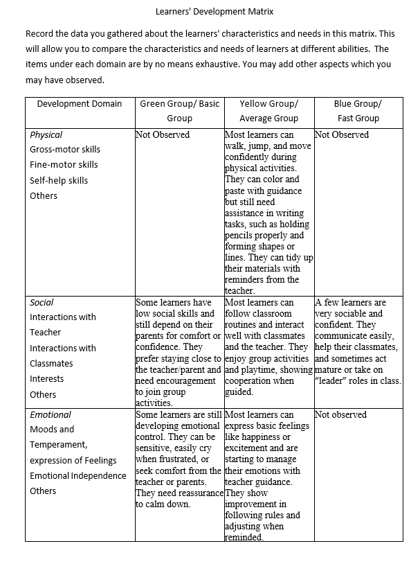
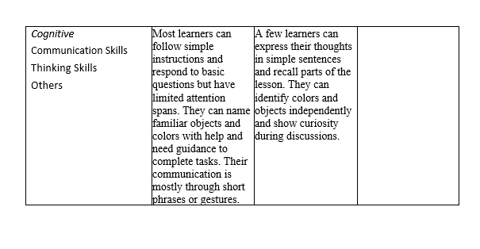
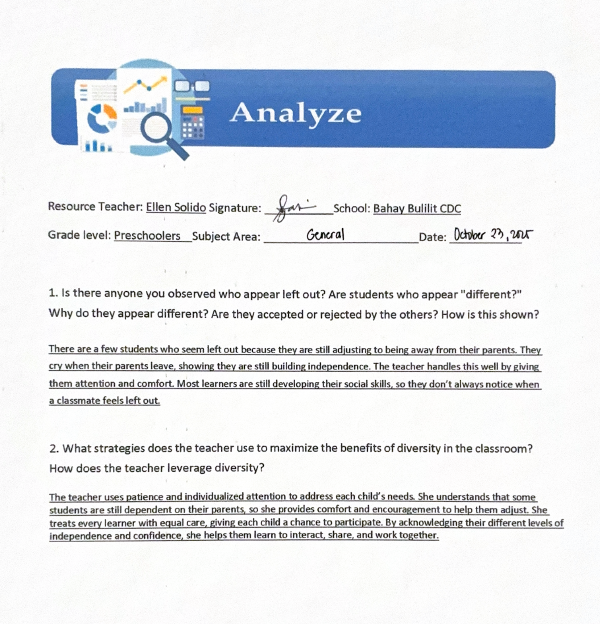
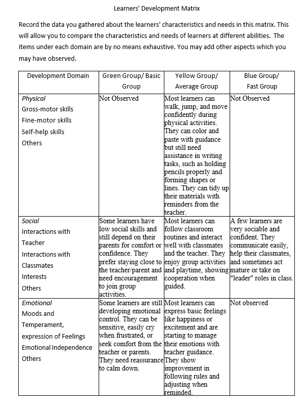
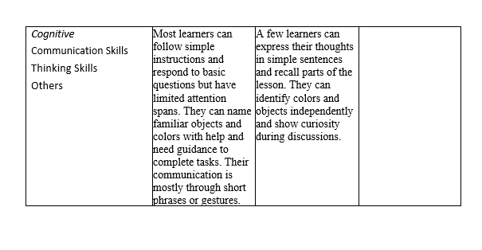
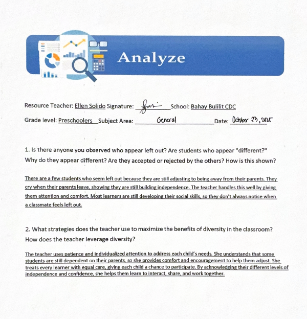
 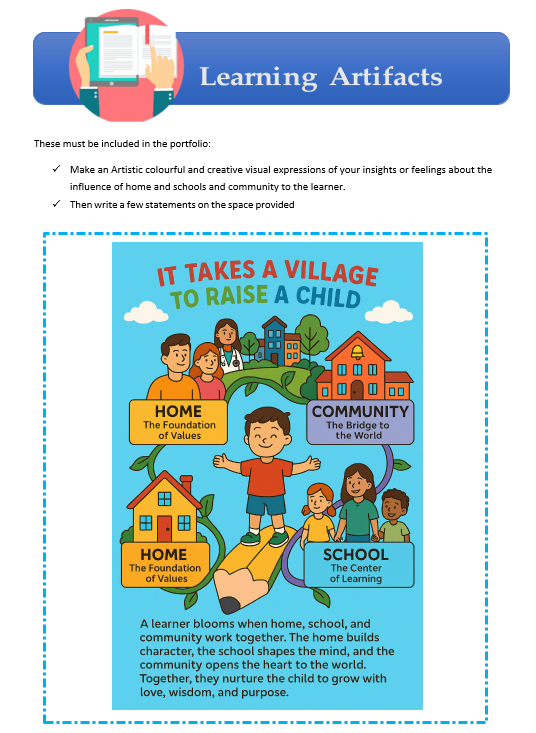
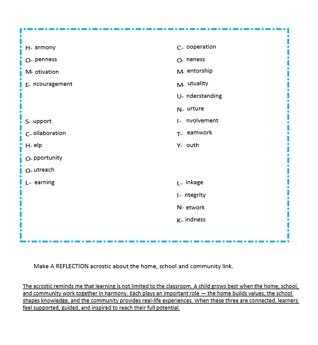
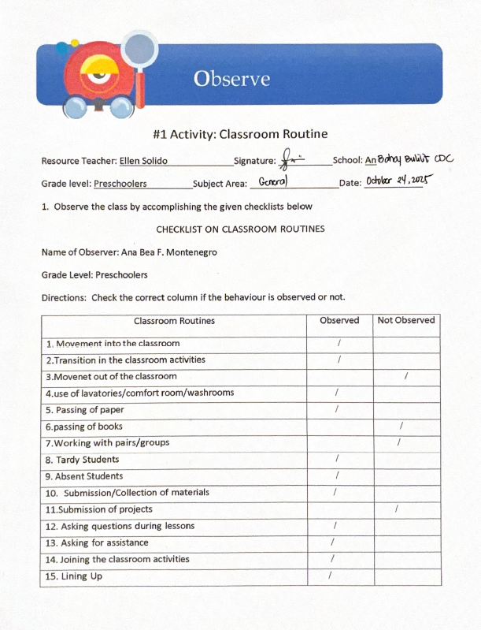
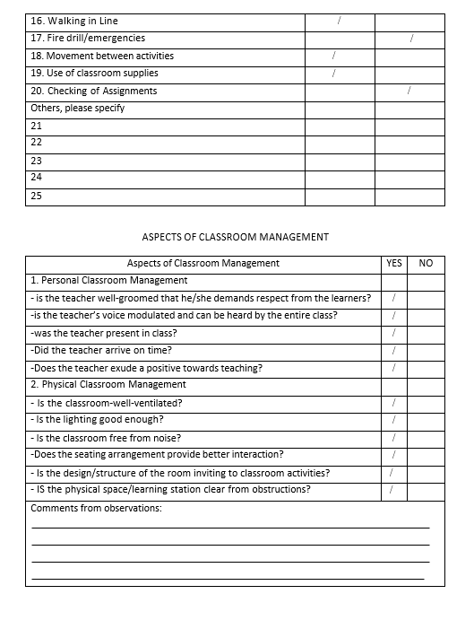
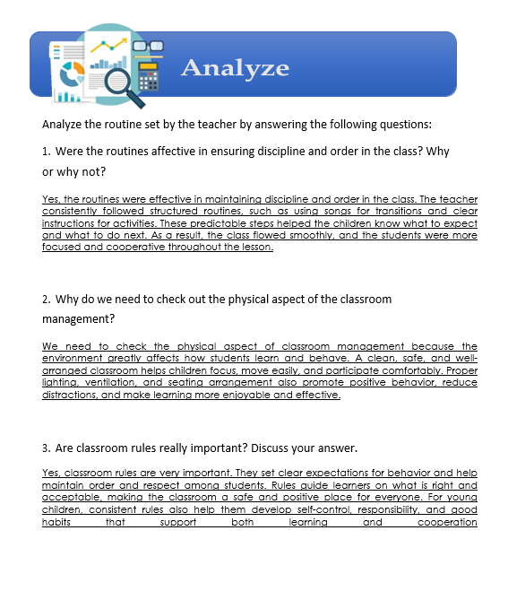
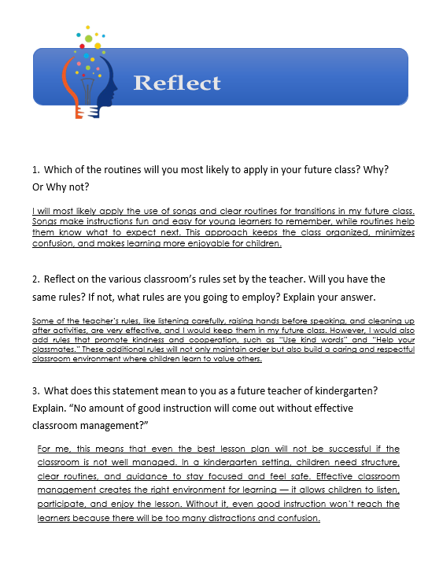
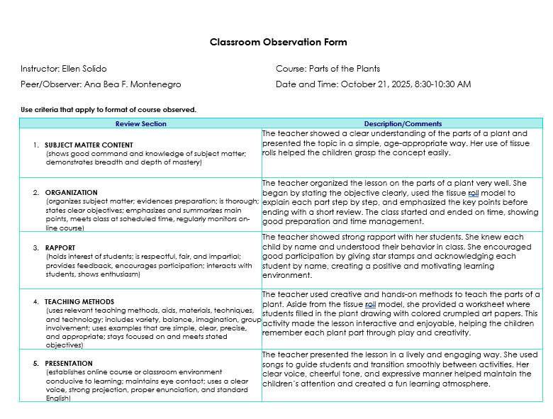
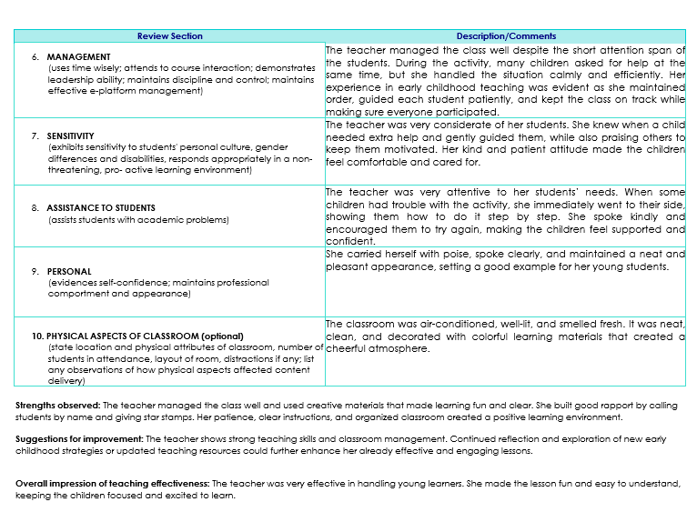
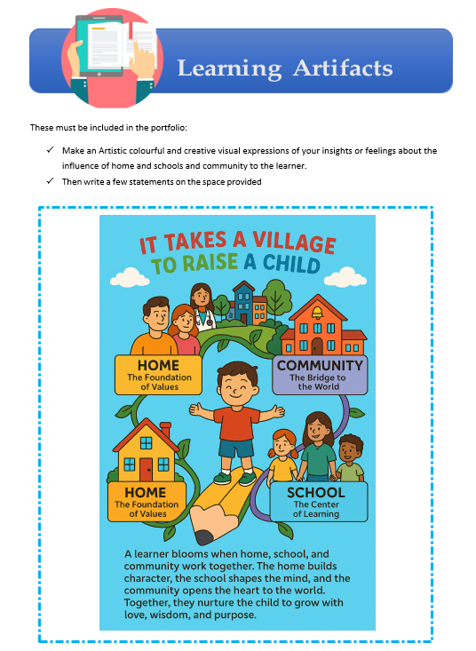
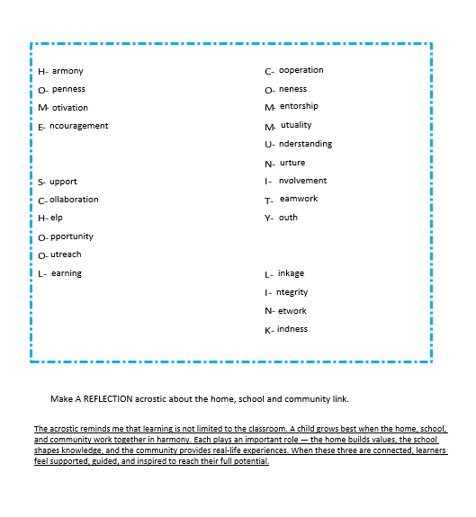
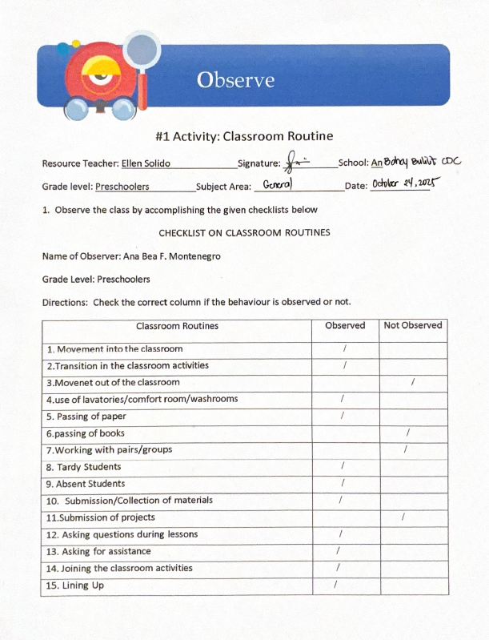
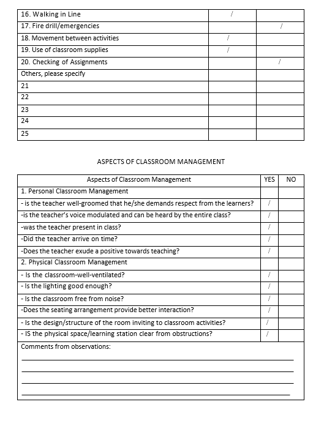
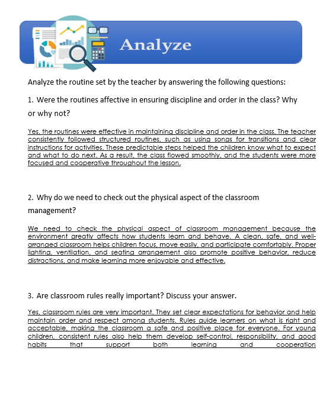
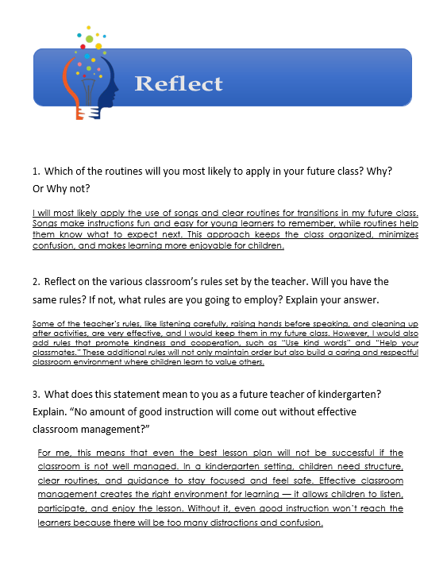
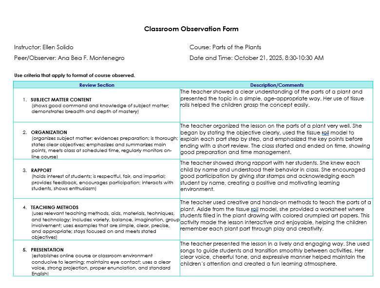
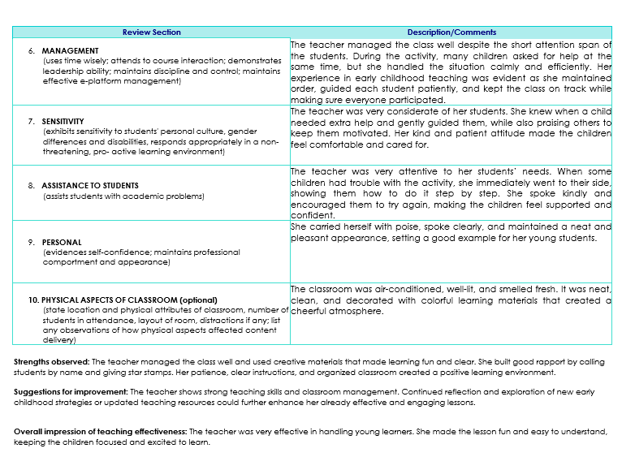
2 Best Lesson Plans/Scripts
Topic: Water Transportation
- Children will be able to recognize different types of water transportation.
- Children will understand that water vehicles move on water, not on land.
- Children will develop motor, language, and social skills through play and group activities.
| Routine Activity | Procedure / Description |
|---|---|
| Arrival / Free Play | Greet children warmly. |
| Meeting Time |
|
| Activity Time |
Hands-on experience about floating objects. Activity: Boat Float Experiment / Craft Materials:
Steps:
|
| Outdoor Playtime | Free time for outdoor play. |
| Snack Time & Break | Teach the learners to wash their hands, toothbrushing, changing clothes and cleaning their table. |
| Rest / Nap Time | Let the learners rest. |
| Circle Time |
|
| Story Time | Make-up story: “The Little Boat That Could” |
| Goodbye Time | Wrap up and say farewell. |
Topic: Community Helpers
- Children will be able to name at least 3 community helpers.
- Children will be able to match a helper to their tool or workplace.
- Children will be able to practice classroom social skills during activities.
| Routine Activity | Procedure / Description |
|---|---|
| Arrival / Free Play | Greet children warmly. |
| Meeting Time |
|
| Activity Time |
Activity 1: Match the Helper
Activity 2: My Favorite Helper
|
| Outdoor Playtime | Free time for outdoor play. |
| Snack Time & Break | Teach the learners to wash their hands, toothbrushing, changing clothes and cleaning their table. |
| Rest / Nap Time | Let the learners rest. |
| Circle Time |
Show picture cards again.
Question Prompts:
|
| Story Time | A book about helpers in the community story. |
| Goodbye Time | Pack up and say goodbye. |
Teaching Demonstrations
Daily Time Records
Attendance Records
Here are the copies of my Daily Time Records (DTR) documenting my internship hours.
Rating Sheets
Performance Rating
Below is the copy of my rating sheet from my cooperating teacher.
Rating Sheet
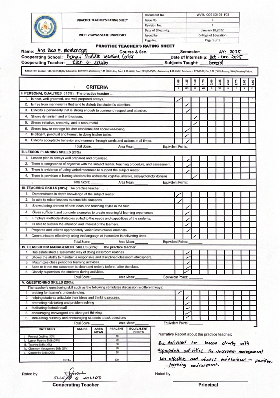Teaching Philosophy
I believe young children learn best in a calm, safe, and consistent environment where they feel seen and trusted. As a beginning teacher, my priority is to build strong relationships and create daily routines that help learners feel secure. When children feel safe, they become more confident to explore, communicate, and try new things.
I also believe in “watching over” children with patience and trust. Instead of stepping in too quickly, I will observe carefully, give them time to attempt tasks on their own, and guide only when needed. This helps children build independence, problem solving skills, and pride in their own effort.
Learning should be active and meaningful, especially through play and real life experiences. I will provide hands on activities, stories, songs, and simple conversations that match the child’s development. I value the small daily moments like cleaning up together, taking turns, and helping a classmate because these teach responsibility, cooperation, and respect in a natural way.
I believe discipline should be gentle and consistent. My goal is not to control behavior through fear, but to teach children how to manage feelings, follow routines, and care about others. I will model empathy and encourage children to notice how their actions affect the people around them.
Finally, I believe teaching is a continuous practice of reflection and improvement. I will look back on each day, learn from feedback, and keep improving little by little. My goal is to be a teacher who leads with patience, supports children’s independence, and helps them grow into kind, capable, and confident learners.
Documentation & Pictures
Here are some captured moments from my internship journey at Bahay Bulilit.